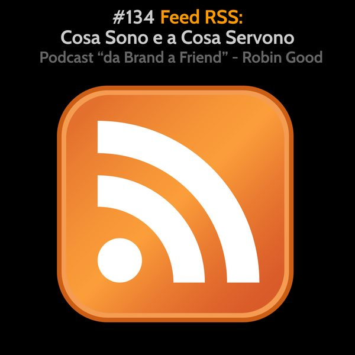

Feed RSS: Cosa Sono e a Cosa Servono

Feed RSS: Cosa Sono e a Cosa Servono
I feed RSS sono una tecnologia aperta, gratuita e accessibile a tutti che consente di potersi abbonare e ricevere tutti gli aggiornamenti di un sito web, senza dover rivelare la propria mail e in maniera totalmente gratuita e automatica.
Tale tecnologia quindi consente, quando usata correttamente, di potersi tenere aggiornati su un grande numero di temi ed argomenti, potendo ricevere in automatico tutti gli aggiornamenti provenienti da un set predefinito di siti specializzati su quel tema.
In realtà i feed RSS possono essere utilizzati anche per trasmettere i contenuti che emergono da ricerche persistenti su temi specifici. Ad esempio è possibile creare un feed RSS per qualsiasi ricerca su Google, potendo quindi ricevere in automatico notifiche per ogni nuovo risultato rilevante che appare per tale "domanda".
I feed RSS sono quindi indispensabili a tutti coloro che dipendono da un costante e puntuale aggiornamento da siti, blog, testate giornalistiche e su temi specifici.
Per poter leggere i contenuti di un feed RSS è necessario utilizzato un cosiddetto "feed reader". Il più popolare, potente e migliore dal punto di vista delle funzionalità attualmente (2020) è Feedly.com. Ci sono però decine di lettori di feed RSS alternativi. Alcuni sono gratuiti, molti altri a pagamento.
RSS feed readers:
https://content-discovery-tools.zeef.com/robin.good#block_3280_rss-feed-readers
https://feedly.com
La maggior parte dei siti web e blog su Internet pubblica automaticamente uno o più feed RSS contenenti tutte le proprie news e novità. Ad esempio, i contenuti di qualsiasi blog o sito basato su Wordpress hanno automaticamente un feed RSS, tutte le pubblicazioni e gli autori su Medium hanno un feed RSS, e così quelli su Flipboard.
Il problema è che il feed RSS spesso non è pubblicizzato e non è quindi né facile, né immediato poter trovare la sua URL.
A tal fine ci sono delle estensioni gratuite per i browser più diffusi che consentono di verificare al volo se un sito ha un feed RSS e scoprirne il suo indirizzo preciso.
Trova il feed RSS per qualsiasi sito: https://chrome.google.com/webstore/detail/get-rss-feed-url/kfghpdldaipanmkhfpdcjglncmilendn
Ci sono inoltre un crescente set di tool commerciali per poter generare feed RSS laddove non esistono. Fra questi:
- RSSGround.com
- FetchRSS.com
- Feedity.com
Scopri di più sui feed RSS qui: https://it.wikipedia.org/wiki/RSS
N.B.: Il sistema di distribuzione di tutti i podcast esistenti è 100% basato sui feed RSS.
**Se sei interessato/a poter apprendere di più su come usare i feed RSS per tenerti aggiornato su qualsiasi argomento in maniera veloce ed efficiente, sto organizzando un workshop online su questo tema specifico. Ho un numero molto limitato di posti disponibili. Se interessato contatta Ludovica.Scarfiotti@robingood.it. (Il workshop è fatto da due sessioni di 2 ore (disponibili in diretta e in versione registrata).
-------------
Info Utili
• Musica di questa puntata:
"10K" by Joakim Karud - disponibile su Bandcamp:
https://joakimkarud.bandcamp.com/track/10k
• Dammi feedback:
critiche, commenti, suggerimenti, idee e domande unendoti al gruppo Telegram https://t.me/@RobinGoodPodcastFeedback
• Ascolta e condividi questo podcast:
https://gopod.me/RobinGood
• Diventa sostenitore:
sostieni il lavoro di Robin Good e tutti i contenuti e risorse utili che condivide costantemente
https://robingood.com/patreon-sharewood-community-campus
https://Patreon.com/Robin_Good
• Seguimi su Telegram:
https://t.me/RobinGoodItalia
(tutti i miei contenuti, immagini, audio e video in un solo canale)
oppure
https://facebook.com/RobinGoodItalia/
(Pagina Facebook ufficiale)
• Newsletter:
http://robingood.it/toptools-newsletter
• Per info e richieste:
mailto: Ludovica.Scarfiotti@robingood.it